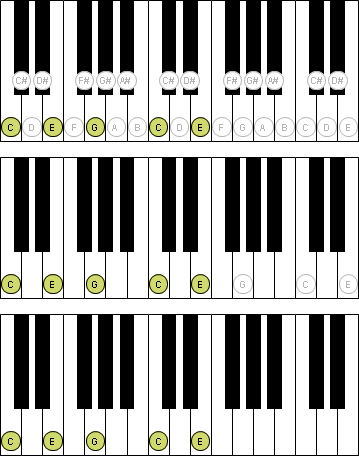

You can set the following preferences for the Keyboard View:
Here you can specify the tone range of the shown keyboard. You can choose between the tone range of the active instrument, several standard keyboards (with different numbers of keys) as well as a user-defined setting.
Here you can specify whether or not unused notes shall be shown on the keyboard. Unused notes are notes which are not necessary for a shown chord or scale.
If you have hidden the unused notes, here you can modify this setting especially for chords. You can specify whether or not unused notes, which can be found in the chord, shall be shown. A C major chord, for example, consists of the notes C-E-G, so all notes C-E-G will be shown on the keyboard.

Here you can specify whether unused notes shall be displayed with a gray or black font and border color.